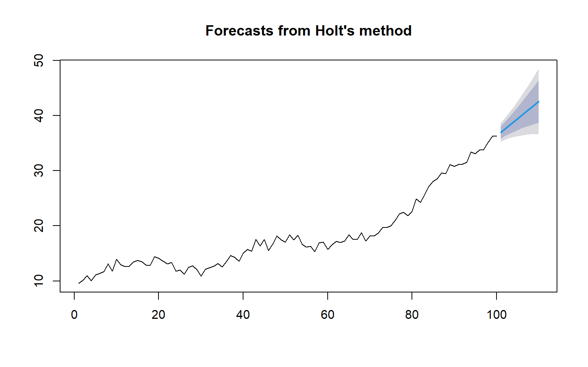
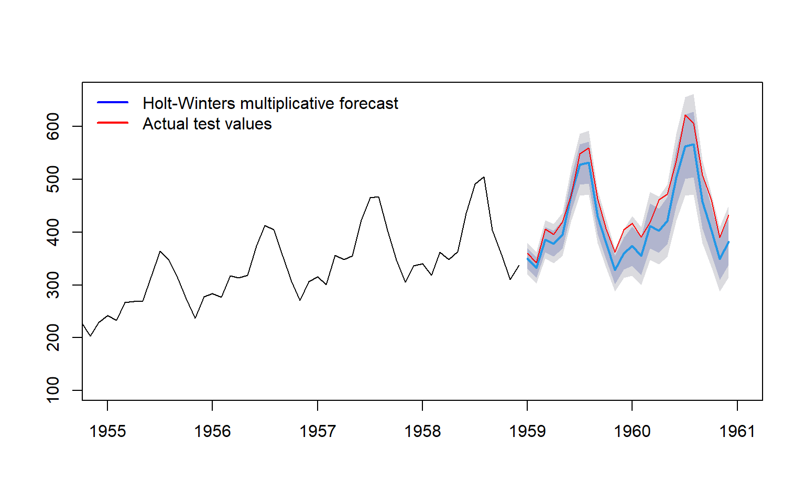
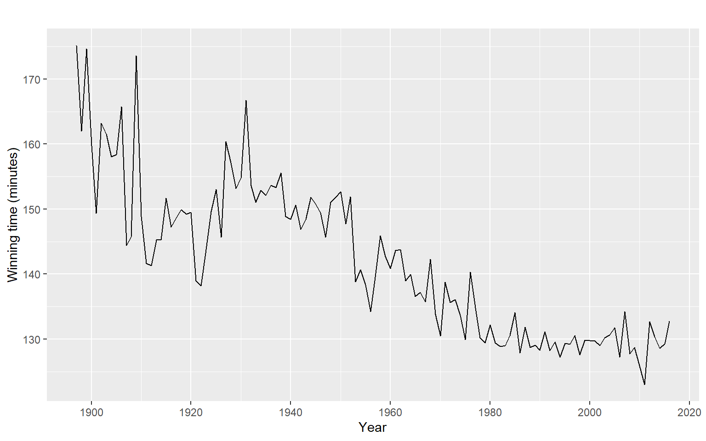

This section covers Part 2 - Exponential Smoothing. I use ses(), holt(), hw() and ets() to fit models and read their output, including the parameter estimates. I choose between methods by looking at the time plot and, for the seasonal case, by comparing errors on a test set. I also write my own SES and Holt routines, minimise the sum of squared errors with optim(), and check the results against R’s functions. Finally, I construct prediction intervals from the normal formula and from bootstrapped residuals, and I compare the two.
The main ideas are as follows,
Simple exponential smoothing (SES): forecasts are weighted averages of past observations, with weights that decay exponentially: \(\alpha, \alpha(1-\alpha), \alpha(1-\alpha)^2, \dots\)
\(\hat y_{t+h|t} = \ell_t + h b_t\). Damped trend multiplies the trend by \(\phi^h\) so forecasts flatten out.
Holt-Winters (triple): adds a seasonal component, additive (constant seasonal swings) or multiplicative (swings grow with the level).
ETS models (Error, Trend, Season) write these methods as state space models. That gives a likelihood, AIC for choosing between them, and proper prediction intervals.
SES on its own has no statistical model, so the intervals need a model assumption. Normal errors, ETS(A,N,N): \(\text{Var} = \sigma^2[1 + (h-1)\alpha^2]\). Or bootstrap the residuals.
5.2 Worked examples
This section shows how to fit simple exponential smoothing by hand and check it against ses(), then simulates data with a trend and fits Holt’s method both by hand and with holt(). It then compares Holt-Winters and ETS on the air passenger data using a test set, and finishes by checking which method forecasts best.
5.2.1 From first principles: SES
The same function as in the notes. Data: annual flow of the Nile, 1871 to 1970.
Code
library(forecast)y <- Nileplot(y, main ="Nile flow")
These are similar to the normal intervals but not identical, because the bootstrap uses the actual residuals, which are a bit skewed. No normality assumption is needed.
5.3.1 From first principles: Holt
Simulate data from Holt’s model, so we know the true values (\(\alpha = 0.5\), \(\beta = 0.2\)). In error form, with one-step error \(e_t\): \(\ell_t = \ell_{t-1} + b_{t-1} + \alpha e_t\) and \(b_t = b_{t-1} + \alpha\beta e_t\).
Code
set.seed(3)n <-100alpha <-0.5beta <-0.2level <-10trend <-0.5y2 <-numeric(n)for (i in1:n) { e <-rnorm(1, 0, 1) y2[i] <- level + trend + e new_level <- level + trend + alpha * e trend <- trend + alpha * beta * e level <- new_level}y2 <-ts(y2)plot(y2, main ="Simulated data with a trend")
R’s holt() reports \(\beta\) in a different form: R’s beta = \(\alpha \times\) the \(\beta\) in our notes. So fit_h$par[1] * fit_h$par[2] should equal R’s beta, and it does. \(\alpha\), \(\ell_0\) and \(b_0\) match directly.
Code
plot(fit_hr)

5.3.2 Choosing a method
What the data look like
Method
R
No trend, no seasonality
Simple exponential smoothing
ses()
Trend
Holt’s linear method
holt()
Trend that should flatten out in the long run
Damped trend
holt(damped = TRUE)
Trend and constant seasonal swings
Holt-Winters additive
hw(seasonal = "additive")
Trend and seasonal swings that grow with the level
Holt-Winters multiplicative
hw(seasonal = "multiplicative")
Look at the time plot first, then confirm with a test set, or with AIC through ets(), which picks between these as models. Damped trends often forecast better beyond a few steps, because straight-line trends rarely last.
5.3.3 Holt-Winters and ETS, compared on a test set
Code
ap <- AirPassengerstrain <-window(ap, end =c(1958, 12))test <-window(ap, start =c(1959, 1))h <-length(test)f_ses <-ses(train, h = h)f_holt <-holt(train, h = h)f_damped <-holt(train, h = h, damped =TRUE)f_hw_add <-hw(train, h = h, seasonal ="additive")f_hw_mult <-hw(train, h = h, seasonal ="multiplicative")fit_ets <-ets(train)f_ets <-forecast(fit_ets, h = h)fit_ets
plot(f_hw_mult, xlim =c(1955, 1961), main ="")lines(test, col ="red")legend("topleft",legend =c("Holt-Winters multiplicative forecast", "Actual test values"),col =c("blue", "red"), lty =1, lwd =2, bty ="n")

Figure 5.1: Holt-Winters multiplicative forecast for the air passenger test period (red = actual values).
The seasonal swings grow with the level, so the multiplicative version does best. SES and Holt ignore the season completely. The damped trend does worse than plain Holt here, because air travel kept growing steadily, so it’s not always the better choice.
5.4 Tutorial: Exponential smoothing exercises
5.4.1 Question 1
Code
library(fpp2)autoplot(marathon) +labs(x ="Year", y ="Winning time (minutes)")tail(marathon)
Time Series:
Start = 2011
End = 2016
Frequency = 1
[1] 123.0333 132.6667 130.3667 128.6167 129.2833 132.7333

Figure 5.2: Winning marathon times (minutes) by year, from the fpp2 marathon data.
5.4.1.1 1.1 SES function
Code
ses_forecast <-function(y, alpha, level) { l <- levelfor (i inseq_along(y)) { l <- alpha * y[i] + (1- alpha) * l } l}fit_ses <-ses(marathon, h =1)alpha_hat <- fit_ses$model$par["alpha"]level_hat <- fit_ses$model$par["l"]my_fc <-ses_forecast(marathon, alpha_hat, level_hat)c(my_fc = my_fc, ses_fc = fit_ses$mean[1])
my_fc.alpha ses_fc
130.3563 130.3563
5.4.1.2 1.2 Point forecast and prediction interval for 2017
The SES forecast for 2017 is 130.36 minutes. Using \(\hat\sigma = 5.52\) and the normal formula, my interval is 119.54 to 141.17. R’s interval is 119.54 to 141.17 as well, and the tiny difference comes from R using the exact 1.96 quantile rather than the rounded 1.96.
5.4.2 Question 2
Code
fit_oil <-ses(oil, h =4)fit_oil$model$par
alpha l
0.9999 110.8832
Code
fit_oil$mean
Time Series:
Start = 2014
End = 2017
Frequency = 1
[1] 542.3412 542.3412 542.3412 542.3412
Code
# Own 95% interval for the first forecast, using s = sd of residualss_oil <-sd(residuals(fit_oil))my_oil_interval <-c(lower = fit_oil$mean[1] -1.96* s_oil,forecast = fit_oil$mean[1],upper = fit_oil$mean[1] +1.96* s_oil)rbind(my_oil_interval,ses_oil_interval =c(lower = fit_oil$lower[1, "95%"],forecast = fit_oil$mean[1],upper = fit_oil$upper[1, "95%"]))
ses() fits \(\hat\alpha = 0.9999\) for the oil series, so the forecast is effectively the last level. The 2014 forecast is 542.34, and R’s 95% interval is 446.20 to 638.48. Using \(s\) as the sample standard deviation of the residuals gives 448.82 to 635.86. The difference is the variance estimate, not the forecast.
5.4.3 Question 3
Code
# Question 1 function modified to return the sum of squared one-step errorsses_sse <-function(pars, y) { l <- pars[1] alpha <- pars[2] sse <-0for (i inseq_along(y)) { e <- y[i] - l sse <- sse + e^2 l <- l + alpha * e # same as alpha * y[i] + (1 - alpha) * l } sse}oil_sub <-window(oil, start =1996, end =2013)fit_optim <-optim(c(oil_sub[1], 0.5), ses_sse, y = oil_sub,method ="L-BFGS-B",lower =c(-Inf, 0), upper =c(Inf, 1))fit_sub <-ses(oil_sub, h =1)rbind(optim = fit_optim$par,ses =c(fit_sub$model$par["l"], fit_sub$model$par["alpha"]))
l alpha
optim 446.5754 0.8338438
ses 446.5868 0.8338901
Minimising the SSE with optim() on 1996 to 2013 gives \(\hat\alpha = 0.834\) and \(\hat\ell_0 = 446.58\), which match ses() to the printed precision. The small difference comes from the optimiser’s tolerance.
5.5 Reflection
I really enjoyed this section. Understanding the math was hard but the idea was simple, our data is a single random reaslisation of an underlying process. It was really cool to make forecasts that when compared to the actual data fit really nicely. The smoothed line also feels like a nice “average” in Figure 5.3. ARIMA usually always looked similar to a naive model, but this feels like we’ve really identified the underlying trend. It was also nice to have a previous understanding of trend and seasonality. The difference between confidence and prediction intervals was also interesting. A confidence interval is an interval estimate for a parameter or the mean. It describes uncertainty in the estimate. A prediction interval is an interval for a future observation. It includes the noise in that observation, so it is wider.
Writing my own SES and Holt routines showed me where R’s numbers come from. The recursion that confused me at first became clear once I ran it on the Nile data, each fitted value is the previous level, and the forecast is the last level. Minimising my own SSE with optim() on the oil data from 1996 to 2013 gave \(\hat\alpha = 0.834\) and \(\hat\ell_0 = 446.58\), which match ses() to the printed precision. That check mattered most, because it showed the optimiser and R agree.
Two results surprised me. For the full oil series, \(\hat\alpha = 0.9999\), so the forecast is flat at the last level for all four years. And my own 95% interval for the oil forecast is narrower than R’s, which comes from using a different variance estimate, not from a different forecast. For the marathon data, my normal interval matches R’s to within 0.0002, so the only difference was the rounding of 1.96.
The smoothing parameter \(\alpha\) controls how quickly the level reacts to new data. When \(\alpha\) is close to 1, the level almost follows the last observation and the method has a short memory. When \(\alpha\) is close to 0, the level changes slowly and averages over a long history.
The level \(\ell_t\) is the smoothed estimate of the current state. The fitted value \(\hat y_{t|t-1} = \ell_{t-1}\) is the one-step-ahead prediction made before \(y_t\) is seen, and the forecast \(\hat y_{t+h|t} = \ell_t\) is the prediction \(h\) steps ahead. SES forecasts are flat because the method assumes no trend and no seasonality, so every future value is the current level.
Holt-Winters adds seasonality. Additive seasonality adds a fixed seasonal amount, which suits swings of constant size. Multiplicative seasonality multiplies the level by a seasonal factor, which suits swings that grow with the level.
ETS writes each method as a state space model with an explicit error distribution. That gives a likelihood, so models can be compared with AIC, and the prediction intervals come from the model.
A confidence interval describes uncertainty in a parameter or the mean. A prediction interval describes uncertainty in a future observation, which also includes the noise term.